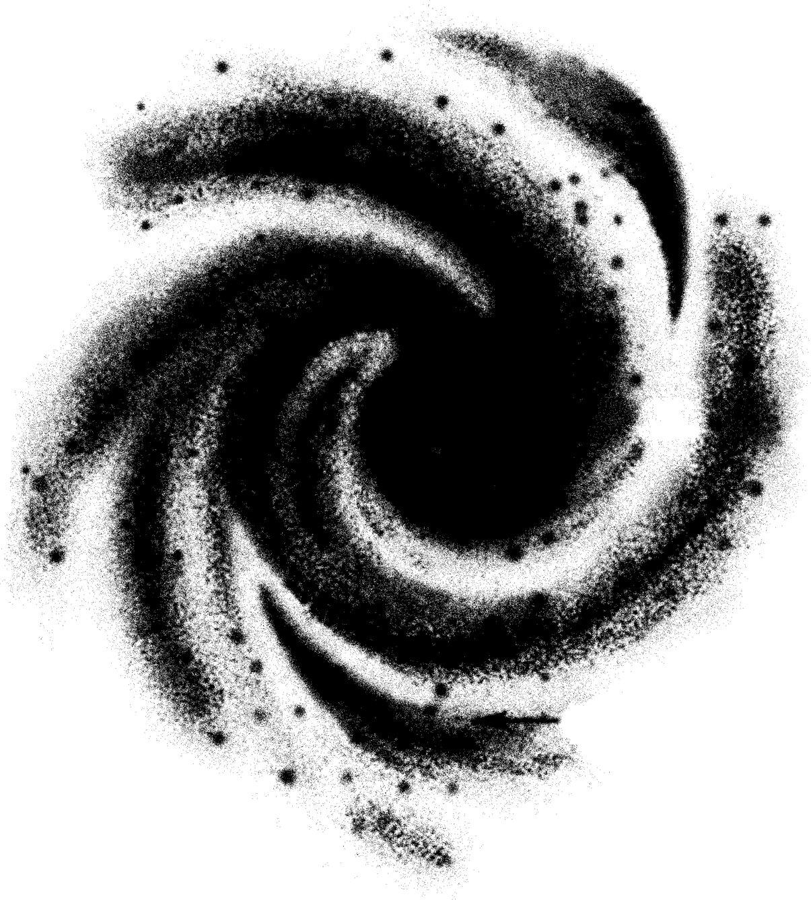

Logos:

Home
Commons
Who
Bay Area Public School
Black Hole Cinema
Community Print Studio
Contemporary Art Museum of Oakland
Counter Culture Labs
Food Not Bombs
La Commune Bookstore Cafe
Sudo Room
Timeless, Infinite Light
Wiki
Calendar
Donate
Friends of Omni Commons